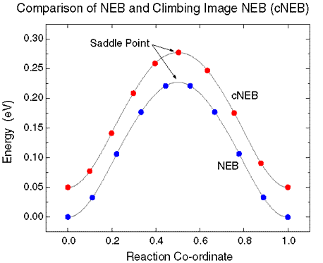

The nudged elastic band (NEB) is a method for finding saddle points and minimum energy paths between known reactants and products. The method works by optimizing a number of intermediate images along the reaction path. Each image finds the lowest energy possible while maintaining equal spacing to neighboring images. This constrained optimization is done by adding spring forces along the band between images and by projecting out the component of the force due to the potential perpendicular to the band.
There are a few improvements to the NEB method which are not yet included in the current version of vasp. A climbing image method [1] and a better tangent definition [2] combine to allow for the more accurate finding of saddle points using the NEB with fewer images than the original method. The setup and operation of this implementation can be identical to what is described in the vasp manual under the elastic band section. The new tangent is implemented by default, and the climbing image method can be turned by setting LCLIMB = .TRUE. in the INCAR file.
The climbing image [1] is a small modification to the NEB method in which the highest energy image is driven up to the saddle point. This image does not feel the spring forces along the band. Instead, the true force at this image along the tangent is inverted. In this way, the image tries to maximize it’s energy along the band, and minimize in all other directions. When this image converges, it will be at the exact saddle point.
Because the highest image is moved to the saddle point and it does not feel the spring forces, the spacing of images on either side of this image will be different. It can be important to do some minimization with the regular NEB method before this flag is turned on, both to have a good estimate of the reaction co-ordinate around the saddle point, and so that the highest image is close to the saddle point. If the maximum image is initially very far from the saddle point, and the climbing image was used from the outset, the path would develop very different spacing on either side of the saddle point.
To use the climbing image, set LCLIMB = .TRUE.

The graph on the right shows an NEB calculation (blue) and a climbing image cNEB calculation* (red).
The system is an Al adatom on an Al(100) surface. The process is an exchange between the adatom and a substraight atom, leading to adatom diffusion.
Notice how the climbing image calculation has shifted the position of the images (by compressing the images on the left) so that one image sits right at the saddle point.
The cNEB energies have been shifted by 0.05 eV so that the two curves are distinct.
Here is an example INCAR for NEB.
Variable |
Default Value |
Type |
Description |
|---|---|---|---|
ICHAIN |
0 | int |
Indicates which method to run. NEB (ICHAIN=0) is the default |
|
IMAGES |
none |
int |
Number of NEB images between the fixed endpoints |
SPRING |
-5.0 |
float |
The spring constant, in eV/Ang^2 between the images; negative value turns on nudging |
LCLIMB |
.TRUE. |
boolean |
Flag to turn on the climbing image algorithm |
LTANGENTOLD |
.FALSE. |
boolean |
Flag to turn on the old central difference tangent |
LDNEB |
.FALSE. |
boolean |
Flag to turn on modified double nudging |
LNEBCELL |
.FALSE. |
boolean |
Flag to turn on SS-NEB. Used with ISIF=3 and IOPT=3. |
JACOBIAN |
(Ω/N)^{1/3}N^{1/2} |
real |
Controls weight of lattice to atomic motion. Ω is volume and N is the number of atoms. |
NOTE: Don’t forget to include optimizer parameters in your INCAR!
References